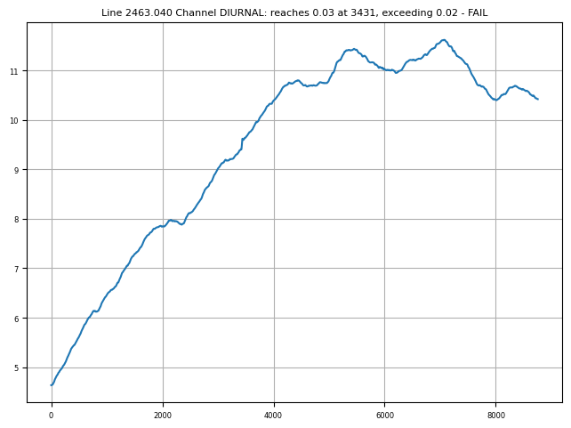
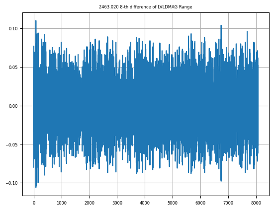
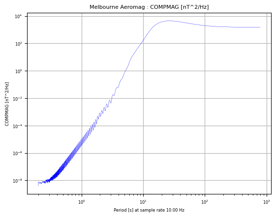

Aeromagnetic data QC¶
This notebook demonstrates the use of functions to perform QC of aeromagnetic data.
Here we demonstrate their use on some aeromagnetic data from the Eastern Victoria survey.
Ensure you have run the Prepare_AeromagData notebook first so that the data are prepared for review.
First, import the required python packages, …
from pathlib import Path
import galileoQC as qc
… then set the path to the geowhizz files.
This is all very much step by step to illustrate the process, and you can certainly compress some of these steps in your own work.
dx = Path(r'./MagData/FD013_Mag.xyz')
dh = dx.with_suffix(".hdf5")
if not dh.exists():
%run ./Prepare_AeromagData.ipynb
We will need channel names later so let’s report them now.
qc.reportChannels(dh, verbose=True)
Whizz Version 1.0
17 channels:
channel units description
--------------------------------------------------
COMPMAG nT
DCMAG nT
DEM m
DIURNAL nT
DOY
FLIGHT
FTIME
IGRFMAG nT
LAT deg
LINE
LONG deg
LVLDMAG nT
MGA-X m
MGA-Y m
MGA-Z m
MSL-Z m
YEAR
A standard technical specification is the requirement that the basemag diurnal monitoring data, collected while each line is sampled, not deviate from a straight-line chord of a certain time span by more than a given number of nanoTesla.
The checkDiurnal function checks the data for such deviations in the given channel, deviations being less than rangeLimit over chords whose time span is nSamples long (as number of fids or samples).
qc.checkDiurnal(dh, 'DIURNAL', lines=[],
rangeLimit = 0.02, nSamples = 8, plot_flag=True)
Checked 12 lines, 1 failed.
L 2463.040: Diurnal for DIURNAL at sample number 3431 diverges from chord by 0.03,
exceeding 0.0 - FAIL

The standard check for noise in aeromagnetic data is difference analysis. Very high frequency signal is assumed to be noise and this is measured by differencing the signal. Commonly the 4-th difference or 8-th difference is used.
The function checkDiff checks the total magnetic field n-th difference channel in a whizzFile against the specification that the peak to peak variation over a set number of samples must not exceed some peak value. If no n-th difference channel is supplied, then the raw magnetic data channel may be used, and its n-th difference will be calculated by the function.
The GA Magnetic Deed sets a specification:
Magnetic noise on unfiltered magnetic data acquired during the survey must be less than 0.1 nT.
The 8th difference will be used to assess the magnetic noise. If the signal of the 8th difference
exceeds 0.1 nT over a distance of 1000 m the line will be re-flown at the contractor’s expense.
For a joint gravity-magnetic survey n-th difference noise is typically higher than for a solely magnetometer survey and technical specifications might be relaxed.
The plot_flag and verbose Boolean parameters control whether the results are plotted, and whether a verbose report is given, as usual.
qc.checkDiff(dh, diff_chan='', raw_chan='LVLDMAG',
lines=[],
limit=0.001, nSamples=300, num_diff=8,
plot_flag=True, verbose=True)
Checked 12 line(s), 1 failure(s) over 1 failed line(s).
Line 2461.010: 2522 exceedances, less than 300 (0.0 m -> 300 fids) consecutively - PASS
Line 2461.020: 657 exceedances, less than 300 (0.0 m -> 300 fids) consecutively - PASS
Line 2461.030: 4955 exceedances, less than 300 (0.0 m -> 300 fids) consecutively - PASS
Line 2463.000: 516 exceedances, less than 300 (0.0 m -> 300 fids) consecutively - PASS
L 2463.020: 8-th difference > 0.001 for 338 > 300 fids; peak exceedance = 0.079 - FAIL
Line 2463.040: 8485 exceedances, less than 300 (0.0 m -> 300 fids) consecutively - PASS
Line 2465.000: 2888 exceedances, less than 300 (0.0 m -> 300 fids) consecutively - PASS
Line 2465.020: 6079 exceedances, less than 300 (0.0 m -> 300 fids) consecutively - PASS
Line 2467.010: 2893 exceedances, less than 300 (0.0 m -> 300 fids) consecutively - PASS
Line 2467.020: 5972 exceedances, less than 300 (0.0 m -> 300 fids) consecutively - PASS
Line 2469.000: 3128 exceedances, less than 300 (0.0 m -> 300 fids) consecutively - PASS
Line 2469.010: 5978 exceedances, less than 300 (0.0 m -> 300 fids) consecutively - PASS

qc.checkDiff(dh, diff_chan='', raw_chan='LVLDMAG',
lines=[],
limit=0.001, maxDuration=30.0, num_diff=8,
plot_flag=True, verbose=True)
Checked 12 line(s), 1 failure(s) over 1 failed line(s).
30.0 seconds evaluated as 299 fids.
Line 2461.010: 2522 exceedances, less than 299 (0.0 m -> 299 fids) consecutively - PASS
Line 2461.020: 657 exceedances, less than 299 (0.0 m -> 299 fids) consecutively - PASS
Line 2461.030: 4955 exceedances, less than 299 (0.0 m -> 299 fids) consecutively - PASS
Line 2463.000: 516 exceedances, less than 299 (0.0 m -> 299 fids) consecutively - PASS
L 2463.020: 8-th difference > 0.001 for 338 > 299 fids; peak exceedance = 0.079 - FAIL
Line 2463.040: 8485 exceedances, less than 299 (0.0 m -> 299 fids) consecutively - PASS
Line 2465.000: 2888 exceedances, less than 299 (0.0 m -> 299 fids) consecutively - PASS
Line 2465.020: 6079 exceedances, less than 299 (0.0 m -> 299 fids) consecutively - PASS
Line 2467.010: 2893 exceedances, less than 299 (0.0 m -> 299 fids) consecutively - PASS
Line 2467.020: 5972 exceedances, less than 299 (0.0 m -> 299 fids) consecutively - PASS
Line 2469.000: 3128 exceedances, less than 299 (0.0 m -> 299 fids) consecutively - PASS
Line 2469.010: 5978 exceedances, less than 299 (0.0 m -> 299 fids) consecutively - PASS
qc.checkDiff(dh, diff_chan='', raw_chan='LVLDMAG',
lines=[],
limit=0.001, maxDistance=1800.0, num_diff=8,
plot_flag=True, verbose=True)
Checked 12 line(s), 1 failure(s) over 1 failed line(s).
Line 2461.010: 2522 exceedances, less than 302 (1800.0 m -> 302 fids) consecutively - PASS
Line 2461.020: 657 exceedances, less than 299 (1800.0 m -> 299 fids) consecutively - PASS
Line 2461.030: 4955 exceedances, less than 301 (1800.0 m -> 301 fids) consecutively - PASS
Line 2463.000: 516 exceedances, less than 300 (1800.0 m -> 300 fids) consecutively - PASS
L 2463.020: 8-th difference > 0.001 for 338 > 292 fids; peak exceedance = 0.079 - FAIL
Line 2463.040: 8485 exceedances, less than 297 (1800.0 m -> 297 fids) consecutively - PASS
Line 2465.000: 2888 exceedances, less than 307 (1800.0 m -> 307 fids) consecutively - PASS
Line 2465.020: 6079 exceedances, less than 302 (1800.0 m -> 302 fids) consecutively - PASS
Line 2467.010: 2893 exceedances, less than 295 (1800.0 m -> 295 fids) consecutively - PASS
Line 2467.020: 5972 exceedances, less than 296 (1800.0 m -> 296 fids) consecutively - PASS
Line 2469.000: 3128 exceedances, less than 306 (1800.0 m -> 306 fids) consecutively - PASS
Line 2469.010: 5978 exceedances, less than 303 (1800.0 m -> 303 fids) consecutively - PASS
It is useful to check the power spectrum of the magnetic data because periodic noise sources can occur and these are often not seen in the standard 4th difference measure. This can be performed at each stage of processing, or just on the raw magnetic data and the final magnetic data. The power spectrum should not have any signs of harmonic signal.
In the example below, there are no spikes in the spectrum above \(10^{-3}\) so all okay.
qc.psdChannel(dh, 'COMPMAG', flightLines=[], shortestPeriod=0.0, minlinelenkm=15.0, verbose=False)
Of 12 lines in database, 10 will be processed.
The first 2634 samples from each line will be used.
